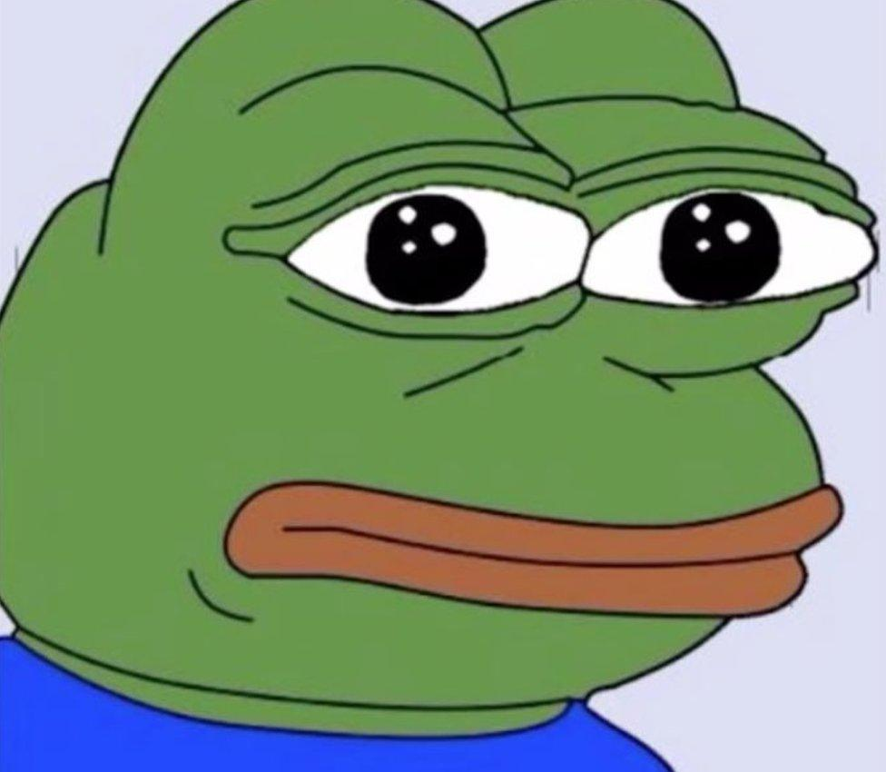

3D Game Artist
Creating immersive worlds and characters through modeling, sculpting, and texturing.
View My WorkPortfolio



Interactive 3D Model
Click and drag to rotate | Scroll to zoom | Right-click and drag to pan
About Me
I am a passionate 3D Artist with 5 years of experience in the gaming industry, specializing in character and hard-surface modeling. My goal is to bring compelling stories to life through visually stunning and technically optimized assets. I thrive in collaborative environments and am always eager to learn new techniques.
Skills & Software
- Modeling: Blender, Maya, ZBrush
- Texturing: Substance Painter, Substance Designer, Photoshop
- Rendering: Marmoset Toolbag, Unreal Engine, Unity
- Core Skills: High-poly Sculpting, Retopology, UV Unwrapping, PBR Texturing, Game Optimization
Get in Touch
I'm currently available for freelance and full-time opportunities.